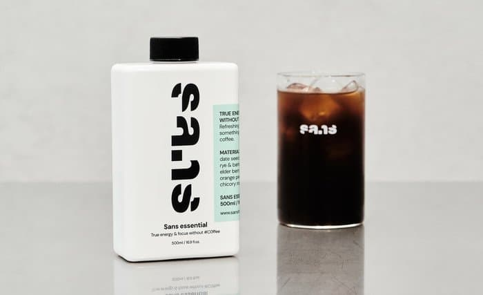

회사에서 마셔서 사진을 못찍으므로 퍼온 짤로 대신
예전에 한창 핫했던 대체커피 얘네는 그 중에서도 K-ㅈ소로 보인다
커피가 농장을 부수고 이산화탄소를 어쩌구 그래서 차랑 뭐시기랑 해서 커피랑 비슷한 맛을 만들겠다 해서 등장한 거임
원료는 대추야자씨, 보리, 호밀, 자스민, 라벤더 등등등
근데 쟤네도 농장 부수고 짓는거 아님? 이라는 나쁜 말이 마려워진다
암튼 맛이 중요하겠지
산스커피
향 콜라, 홍차, 초콜릿, 보리차
맛 콜라, 텁텁함, 파우더리, 쓴맛은 거의 없는 편, 루이보스, 둥굴레
전반적으로 풋내
일단 나름의 파우더리를 위시한 바디감은 있지만 커피라고 생각이 들진 않는다 게다가 좃한민국 사람들이 선호하는 구수~한 숭늉같은 커피랑은 거리가 멀고 향긋하고 가벼운 향미가 주를 이룬다
마시고 나면 묘하게 텁텁하면서도 애매한 기분이 든다..
커피말고 음료 측면에서는 스벅 아메리카노보다는 나을지도?? 고퀄 아메나 브루잉을 대체하기는 언감생심인듯
댓글 5개